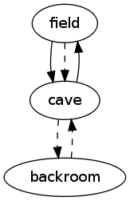

Contents
12. Open and close
|
How to program a text adventure in C
12. Open and close
In the previous chapter,
we used ‘condition’ functions to make objects disappear.
But of course, there is a much simpler way to achieve the same:
just clear the object’s location attribute!
The cave entrance was a typical example
where condition functions work particularly well.
This is because the entrance is affected by attributes in other objects
(the guard and the silver coin);
the functions make it possible to keep all the logic together.
Let’s take a more straightforward example.
Suppose the cave has a door leading to a backroom.
Just a simple doorway, which the player can open and close.
Just like in the previous chapter, we will use two objects for the passage;
one to represent the open door, and another for when it is closed.
| - backroom
description "a backroom"
tags "backroom"
details "The room is dusty and messy.\n"
- openDoorToBackroom
description "an open door to the south"
tags "south", "door", "doorway"
destination backroom
details "The door is open.\n"
textGo "You walk through the door into the backroom.\n"
- closedDoorToBackroom
description "a closed door to the south"
tags "south", "door", "doorway"
location cave
prospect backroom
details "The door is closed.\n"
textGo "The door is closed.\n"
|
Naturally, the door should be accessible from the other side as well.
| - openDoorToCave
description "an open door to the north"
tags "north", "door", "doorway"
destination cave
details "The door is open.\n"
textGo "You walk through the door into the cave.\n"
- closedDoorToCave
description "a closed door to the north"
tags "north", "door", "doorway"
location backroom
prospect cave
details "The door is closed.\n"
textGo "The door is closed.\n"
|
Notice I only gave the closed doorways a location; the open ones have none.
So initially, the door is closed
(hence the dashed arrows between cave and backroom
in the generated map you see on the right).
To open the door, all we have to do is swap the locations.

| openDoorToBackroom->location = cave;
closedDoorToBackroom->location = NULL;
openDoorToCave->location = backroom;
closedDoorToCave->location = NULL;
|
Let’s create a helper function to accommodate this.
| void swapLocations(OBJECT *obj1, OBJECT *obj2)
{
OBJECT *tmp = obj1->location;
obj1->location = obj2->location;
obj2->location = tmp;
}
|
Now the following statements can be used to open the door;
and once it is open, the same statements will close it again.
| swapLocations(openDoorToBackroom, closedDoorToBackroom);
swapLocations(openDoorToCave, closedDoorToCave);
|
The helper function is particularly convenient
when the object in question is movable.
For example, a box can be opened and closed,
but it is also an item that can be picked up and moved elsewhere.
In other words, its location is not fixed.
Function swapLocations does not rely on a fixed location,
since it passes the current location back and forth between two objects.
Of course, a box is not a passage;
the player is always on the outside, so a single pair of objects will suffice,
and so will a single call to swapLocations.
| swapLocations(openBox, closedBox);
|
This is more or less all we need
to implement some new commands open and close.
Below is a simple implementation of open;
the implementation of close is similar.
| OBJECT *obj = parseObject(noun);
if (obj == closedDoorToBackRoom || obj == closedDoorToCave)
{
swapLocations(openDoorToBackroom, closedDoorToBackroom);
swapLocations(openDoorToCave, closedDoorToCave);
printf("OK.\n");
}
else if (obj == closedBox)
{
swapLocations(openBox, closedBox);
printf("OK.\n");
}
else if (obj == openDoorToBackRoom || obj == openDoorToCave || obj == openBox)
{
printf("That is already open.\n");
}
else
{
printf("That cannot be opened.\n");
}
|
To make things slightly more complicated,
we can put a lock on the door or on the box.
This requires (at least) three mutually exclusive objects;
one for each of the possible states:
open, closed and locked.
But we can still use the same function to swap locations of the objects.
For example, here’s how to unlock a locked box; and vice versa.
| swapLocations(closedBox, lockedBox);
|
There is some overhead involved in the other commands.
Our implementation of command open must be expanded
to handle the new object lockedBox:
| ...
else if (obj == lockedBox)
{
printf("You can't, it is locked.\n");
}
...
|
It may be clear that the number of lines of code
is proportional to the number of doors in the game
(and boxes and other objects that can be opened).
So if your game has more than just a handful of doors,
then it is a good idea to go for a more generic solution.
By the way, this is something that goes for every command:
when it concerns a good many objects, try to write generic code;
but when you are dealing with one or two special cases,
just stick to straightforward, specialized code.
Generic code typically comes with a data-driven approach.
In other words,
we need to add one or more attributes to our object structure.
In this particular case, we will be adding a function pointer
for each of the commands we wish to support:
open, close, lock and unlock.
| object.txt |
- #include <stdio.h>
- #include "object.h"
- #include "toggle.h"
- typedef struct object {
- bool (*condition)(void);
- const char *description;
- const char **tags;
- struct object *location;
- struct object *destination;
- struct object *prospect;
- const char *details;
- const char *contents;
- const char *textGo;
- int weight;
- int capacity;
- int health;
- const char *(*open)(void);
- const char *(*close)(void);
- const char *(*lock)(void);
- const char *(*unlock)(void);
- } OBJECT;
- extern OBJECT objs[];
- - field
- description "an open field"
- tags "field"
- details "The field is a nice and quiet place under a clear blue sky.\n"
- capacity 9999
- - cave
- description "a little cave"
- tags "cave"
- details "The cave is just a cold, damp, rocky chamber.\n"
- capacity 9999
- - silver
- description "a silver coin"
- tags "silver", "coin", "silver coin"
- location field
- details "The coin has an eagle on the obverse.\n"
- weight 1
- - gold
- description "a gold coin"
- tags "gold", "coin", "gold coin"
- location openBox
- details "The shiny coin seems to be a rare and priceless artefact.\n"
- weight 1
- - guard
- description "a burly guard"
- tags "guard", "burly guard"
- location field
- details "The guard is a really big fellow.\n"
- contents "He has"
- health 100
- capacity 20
- - player
- description "yourself"
- tags "yourself"
- location field
- details "You would need a mirror to look at yourself.\n"
- contents "You have"
- health 100
- capacity 20
- - intoCave
- condition { return guard->health == 0 || silver->location == guard; }
- description "a cave entrance to the east"
- tags "east", "entrance"
- location field
- destination cave
- details "The entrance is just a narrow opening in a small outcrop.\n"
- textGo "You walk into the cave.\n"
- open isAlreadyOpen
- - intoCaveBlocked
- condition { return guard->health > 0 && silver->location != guard; }
- description "a cave entrance to the east"
- tags "east", "entrance"
- location field
- prospect cave
- details "The entrance is just a narrow opening in a small outcrop.\n"
- textGo "The guard stops you from walking into the cave.\n"
- open isAlreadyOpen
- - exitCave
- description "a way out to the west"
- tags "west", "out"
- location cave
- destination field
- details "Sunlight pours in through an opening in the cave's wall.\n"
- textGo "You walk out of the cave.\n"
- open isAlreadyOpen
- - wallField
- description "dense forest all around"
- tags "west", "north", "south", "forest"
- location field
- details "The field is surrounded by trees and undergrowth.\n"
- textGo "Dense forest is blocking the way.\n"
- - wallCave
- description "solid rock all around"
- tags "east", "north", "rock"
- location cave
- details "Carved in stone is a secret password 'abccb'.\n"
- textGo "Solid rock is blocking the way.\n"
- - backroom
- description "a backroom"
- tags "backroom"
- details "The room is dusty and messy.\n"
- - wallBackroom
- description "solid rock all around"
- tags "east", "west", "south", "rock"
- location backroom
- details "Trendy wallpaper covers the rock walls.\n"
- textGo "Solid rock is blocking the way.\n"
- - openDoorToBackroom
- description "an open door to the south"
- tags "south", "door", "doorway"
- destination backroom
- details "The door is open.\n"
- textGo "You walk through the door into the backroom.\n"
- open isAlreadyOpen
- close toggleBackdoor
- - closedDoorToBackroom
- description "a closed door to the south"
- tags "south", "door", "doorway"
- location cave
- prospect backroom
- details "The door is closed.\n"
- textGo "The door is closed.\n"
- open toggleBackdoor
- close isAlreadyClosed
- - openDoorToCave
- description "an open door to the north"
- tags "north", "door", "doorway"
- destination cave
- details "The door is open.\n"
- textGo "You walk through the door into the cave.\n"
- open isAlreadyOpen
- close toggleBackdoor
- - closedDoorToCave
- description "a closed door to the north"
- tags "north", "door", "doorway"
- location backroom
- prospect cave
- details "The door is closed.\n"
- textGo "The door is closed.\n"
- open toggleBackdoor
- close isAlreadyClosed
- - openBox
- description "a wooden box"
- tags "box", "wooden box"
- details "The box is open.\n"
- weight 5
- capacity 10
- open isAlreadyOpen
- close toggleBox
- lock isStillOpen
- unlock isAlreadyOpen
- - closedBox
- description "a wooden box"
- tags "box", "wooden box"
- details "The box is closed.\n"
- weight 5
- open toggleBox
- close isAlreadyClosed
- lock toggleBoxLock
- unlock isAlreadyUnlocked
- - lockedBox
- description "a wooden box"
- tags "box", "wooden box"
- location backroom
- details "The box is closed.\n"
- weight 5
- open isStillLocked
- close isAlreadyClosed
- lock isAlreadyLocked
- unlock toggleBoxLock
- - keyForBox
- description "a tiny key"
- tags "key", "tiny key"
- location cave
- details "The key is really small and shiny.\n"
- weight 1
|
Explanation:
- Line 86:
at first sight, isAlreadyOpen may seem inappropriate here;
technically, intoCaveBlocked is a closed passage.
But storywise, it is still an opening.
- Line 165, 176, 187:
If you prefer a heavy treasure chest instead of a box,
then all you have to do is increase the weight
(and adjust the relevant text and tags accordingly).
To avoid
duplicate code,
I deliberately did not use anonymous functions this time.
Instead, we will implement the necessary logic in a separate module.
| toggle.h |
- extern const char *cannotBeOpened(void);
- extern const char *cannotBeClosed(void);
- extern const char *cannotBeLocked(void);
- extern const char *cannotBeUnlocked(void);
- extern const char *isAlreadyOpen(void);
- extern const char *isAlreadyClosed(void);
- extern const char *isAlreadyLocked(void);
- extern const char *isAlreadyUnlocked(void);
- extern const char *isStillOpen(void);
- extern const char *isStillLocked(void);
- extern const char *toggleBackdoor(void);
- extern const char *toggleBox(void);
- extern const char *toggleBoxLock(void);
|
| toggle.c |
- #include "object.h"
- static void swapLocations(OBJECT *obj1, OBJECT *obj2)
- {
- OBJECT *tmp = obj1->location;
- obj1->location = obj2->location;
- obj2->location = tmp;
- }
- const char *cannotBeOpened(void) { return "That cannot be opened.\n"; }
- const char *cannotBeClosed(void) { return "That cannot be closed.\n"; }
- const char *cannotBeLocked(void) { return "That cannot be locked.\n"; }
- const char *cannotBeUnlocked(void) { return "That cannot be unlocked.\n"; }
- const char *isAlreadyOpen(void) { return "That is already open.\n"; }
- const char *isAlreadyClosed(void) { return "That is already closed.\n"; }
- const char *isAlreadyLocked(void) { return "That is already locked.\n"; }
- const char *isAlreadyUnlocked(void) { return "That is already unlocked.\n"; }
- const char *isStillOpen(void) { return "That is still open.\n"; }
- const char *isStillLocked(void) { return "That is still locked.\n"; }
- const char *toggleBackdoor(void)
- {
- swapLocations(openDoorToBackroom, closedDoorToBackroom);
- swapLocations(openDoorToCave, closedDoorToCave);
- return "OK.\n";
- }
- const char *toggleBox(void)
- {
- swapLocations(openBox, closedBox);
- return "OK.\n";
- }
- const char *toggleBoxLock(void)
- {
- if (keyForBox->location == player)
- {
- swapLocations(closedBox, lockedBox);
- return "OK.\n";
- }
- else
- {
- return "You don't have a key.\n";
- }
- }
|
As announced earlier, the implementations of the four commands
open, close, lock and unlock
are totally generic.
| execute.h |
- extern void executeOpen(const char *noun);
- extern void executeClose(const char *noun);
- extern void executeLock(const char *noun);
- extern void executeUnlock(const char *noun);
- extern void executeGet(const char *noun);
- extern void executeDrop(const char *noun);
- extern void executeAsk(const char *noun);
- extern void executeGive(const char *noun);
- extern void executeInventory(void);
|
| execute.c |
- #include <stdio.h>
- #include "object.h"
- #include "misc.h"
- #include "match.h"
- #include "move.h"
- void executeOpen(const char *noun)
- {
- OBJECT *obj = matchingObject(noun);
- if (objectWithinReach("open", obj, noun))
- {
- printf("%s", (*obj->open)());
- }
- }
- void executeClose(const char *noun)
- {
- OBJECT *obj = matchingObject(noun);
- if (objectWithinReach("close", obj, noun))
- {
- printf("%s", (*obj->close)());
- }
- }
- void executeLock(const char *noun)
- {
- OBJECT *obj = matchingObject(noun);
- if (objectWithinReach("lock", obj, noun))
- {
- printf("%s", (*obj->lock)());
- }
- }
- void executeUnlock(const char *noun)
- {
- OBJECT *obj = matchingObject(noun);
- if (objectWithinReach("unlock", obj, noun))
- {
- printf("%s", (*obj->unlock)());
- }
- }
- void executeGet(const char *noun)
- {
- moveObject(noun, player->location, player);
- }
- void executeDrop(const char *noun)
- {
- moveObject(noun, player, player->location);
- }
- void executeAsk(const char *noun)
- {
- moveObject(noun, actorHere(), player);
- }
- void executeGive(const char *noun)
- {
- moveObject(noun, player, actorHere());
- }
- void executeInventory(void)
- {
- if (listObjectsAtLocation(player) == 0)
- {
- printf("You are empty-handed.\n");
- }
- }
|
Above, I used a generic function objectWithinReach
to handle objects that are not here;
see below for its implementation.
This way, we don’t have to write the same code four times
(once for every execute function).
More commands will be added in chapter 15;
these will benefit from the same function.
| move.h |
- extern void moveObject(const char *noun, OBJECT *from, OBJECT *to);
- extern bool objectWithinReach(const char *verb, OBJECT *obj, const char *noun);
|
| move.c |
- #include <stdio.h>
- #include "object.h"
- #include "misc.h"
- #include "match.h"
- void moveObject(const char *noun, OBJECT *from, OBJECT *to)
- {
- OBJECT *obj = matchingObject(noun);
- if (obj == NULL)
- {
- printf("I don't understand what item you mean.\n");
- }
- else if (from == NULL)
- {
- printf("I don't understand who you want to ask.\n");
- }
- else if (from != obj->location)
- {
- switch (distanceTo(obj))
- {
- case distPlayer:
- printf("You should not be doing that to yourself.\n");
- break;
- case distHeld:
- printf("You already have %s.\n", obj->description);
- break;
- case distLocation:
- case distOverthere:
- printf("That's not an item.\n");
- break;
- case distHere:
- if (from == player)
- {
- printf("You have no %s.\n", noun);
- }
- else
- {
- printf("Sorry, %s has no %s.\n", from->description, noun);
- }
- break;
- case distHereContained:
- printf("Sorry, %s is holding it.\n", obj->location->description);
- break;
- default:
- printf("You don't see any %s here.\n", noun);
- }
- }
- else if (to == NULL)
- {
- printf("There is nobody here to give that to.\n");
- }
- else if (obj->weight > to->capacity)
- {
- printf("That is way too heavy.\n");
- }
- else if (obj->weight + weightOfContents(to) > to->capacity)
- {
- printf("That would become too heavy.\n");
- }
- else
- {
- obj->location = to;
- printf("OK.\n");
- }
- }
- bool objectWithinReach(const char *verb, OBJECT *obj, const char *noun)
- {
- bool ok = false;
- DISTANCE distance = distanceTo(obj);
- if (distance > distNotHere)
- {
- printf("I don't understand what you want to %s.\n", verb);
- }
- else if (distance == distNotHere)
- {
- printf("You don't see any %s here.\n", noun);
- }
- else if (distance >= distHereContained)
- {
- printf("That is out of reach.\n");
- }
- else
- {
- ok = true;
- }
- return ok;
- }
|
The necessary modifications to object.awk are very straightforward:
| object.awk |
- BEGIN {
- count = 0;
- obj = "";
- if (pass == "h") {
- print "#include <stdbool.h>";
- }
- if (pass == "c2") {
- print "\nstatic bool alwaysTrue(void) { return true; }";
- print "\nOBJECT objs[] = {";
- }
- }
- /^- / {
- outputRecord(",");
- obj = $2;
- prop["condition"] = "alwaysTrue";
- prop["description"] = "NULL";
- prop["tags"] = "";
- prop["location"] = "NULL";
- prop["destination"] = "NULL";
- prop["prospect"] = "";
- prop["details"] = "\"You see nothing special.\\n\"";
- prop["contents"] = "\"You see\"";
- prop["textGo"] = "\"You can't get much closer than this.\\n\"";
- prop["weight"] = "99";
- prop["capacity"] = "0";
- prop["health"] = "0";
- prop["open"] = "cannotBeOpened";
- prop["close"] = "cannotBeClosed";
- prop["lock"] = "cannotBeLocked";
- prop["unlock"] = "cannotBeUnlocked";
- }
- obj && /^[ \t]+[a-z]/ {
- name = $1;
- $1 = "";
- if (name in prop) {
- prop[name] = $0;
- if (/^[ \t]*\{/) {
- prop[name] = name count;
- if (pass == "c1") print "static bool " prop[name] "(void) " $0;
- }
- }
- else if (pass == "c2") {
- print "#error \"" FILENAME " line " NR ": unknown attribute '" name "'\"";
- }
- }
- !obj && pass == (/^#include/ ? "c1" : "h") {
- print;
- }
- END {
- outputRecord("\n};");
- if (pass == "h") {
- print "\n#define endOfObjs\t(objs + " count ")";
- print "\n#define validObject(obj)\t" \
- "((obj) != NULL && (*(obj)->condition)())";
- print "\n#define forEachObject(obj)\t" \
- "for (obj = objs; obj < endOfObjs; obj++) if (validObject(obj))";
- }
- }
- function outputRecord(separator)
- {
- if (obj) {
- if (pass == "h") {
- print "#define " obj "\t(objs + " count ")";
- }
- else if (pass == "c1") {
- print "static const char *tags" count "[] = {" prop["tags"] ", NULL};";
- }
- else if (pass == "c2") {
- print "\t{\t/* " count " = " obj " */";
- print "\t\t" prop["condition"] ",";
- print "\t\t" prop["description"] ",";
- print "\t\ttags" count ",";
- print "\t\t" prop["location"] ",";
- print "\t\t" prop["destination"] ",";
- print "\t\t" prop[prop["prospect"] ? "prospect" : "destination"] ",";
- print "\t\t" prop["details"] ",";
- print "\t\t" prop["contents"] ",";
- print "\t\t" prop["textGo"] ",";
- print "\t\t" prop["weight"] ",";
- print "\t\t" prop["capacity"] ",";
- print "\t\t" prop["health"] ",";
- print "\t\t" prop["open"] ",";
- print "\t\t" prop["close"] ",";
- print "\t\t" prop["lock"] ",";
- print "\t\t" prop["unlock"];
- print "\t}" separator;
- delete prop;
- }
- count++;
- }
- }
|
| Sample output |
|---|
Welcome to Little Cave Adventure.
You are in an open field.
You see:
a silver coin
a burly guard
a cave entrance to the east
dense forest all around
--> get coin
OK.
--> give coin
OK.
--> go cave
You walk into the cave.
You are in a little cave.
You see:
a way out to the west
solid rock all around
a closed door to the south
a tiny key
--> get key
OK.
--> go south
The door is closed.
--> open door
OK.
--> go south
You walk through the door into the backroom.
You are in a backroom.
You see:
solid rock all around
an open door to the north
a wooden box
--> unlock box
OK.
--> open box
OK.
--> look box
The box is open.
You see:
a gold coin
--> get gold
Sorry, a wooden box is holding it.
--> quit
Bye!
|
The additions to parsexec.c are equally straightforward.
| parsexec.c |
- #include <stdio.h>
- #include <stdbool.h>
- #include <string.h>
- #include "location.h"
- #include "execute.h"
- bool parseAndExecute(char *input)
- {
- char *verb = strtok(input, " \n");
- char *noun = strtok(NULL, "\n");
- if (verb != NULL)
- {
- if (strcmp(verb, "quit") == 0)
- {
- return false;
- }
- else if (strcmp(verb, "look") == 0)
- {
- executeLook(noun);
- }
- else if (strcmp(verb, "go") == 0)
- {
- executeGo(noun);
- }
- else if (strcmp(verb, "get") == 0)
- {
- executeGet(noun);
- }
- else if (strcmp(verb, "drop") == 0)
- {
- executeDrop(noun);
- }
- else if (strcmp(verb, "give") == 0)
- {
- executeGive(noun);
- }
- else if (strcmp(verb, "ask") == 0)
- {
- executeAsk(noun);
- }
- else if (strcmp(verb, "inventory") == 0)
- {
- executeInventory();
- }
- else if (strcmp(verb, "open") == 0)
- {
- executeOpen(noun);
- }
- else if (strcmp(verb, "close") == 0)
- {
- executeClose(noun);
- }
- else if (strcmp(verb, "lock") == 0)
- {
- executeLock(noun);
- }
- else if (strcmp(verb, "unlock") == 0)
- {
- executeUnlock(noun);
- }
- else
- {
- printf("I don't know how to '%s'.\n", verb);
- }
- }
- return true;
- }
|
Notes:
- You may have noticed that object.awk has almost doubled in size
in this chapter.
I can already promise you, this is only the beginning.
object.txt is our main source of game data;
once we seriously start adding locations, items and actors,
the number of lines will quickly grow to many thousands.
- Function swapLocation
can be used for many other things than doors and locks.
In chapter 15, it will be used again, this time to turn the light on and off.
- As you can see in the sample output,
the player is able to unlock and open the box.
But he is still unable to get the gold coin from the box
(or put it back in again),
and our parser cannot handle ‘complex’ commands like
get coin from box or put coin in box.
So in the next chapter, we will write a whole new parser;
the current two-line implementation badly needs replacement!
Next chapter: 13. The parser